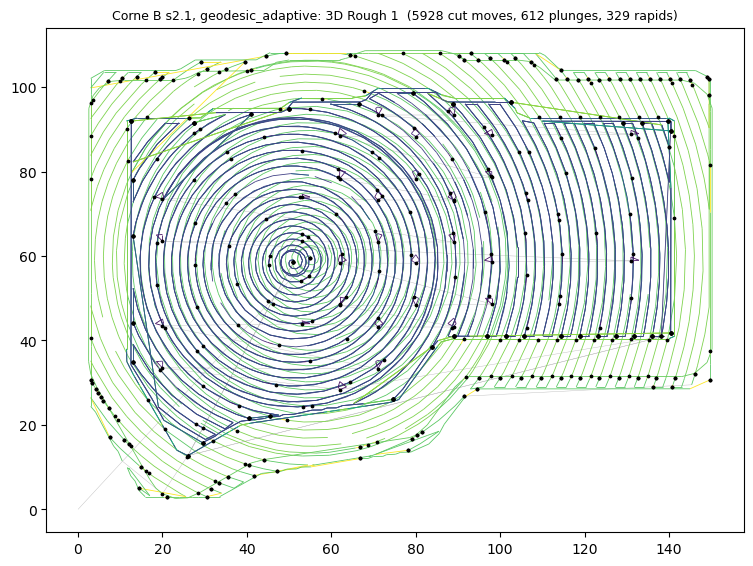
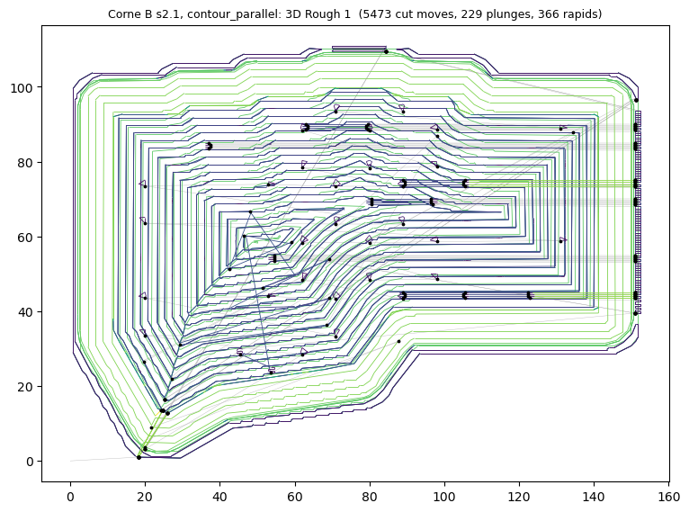
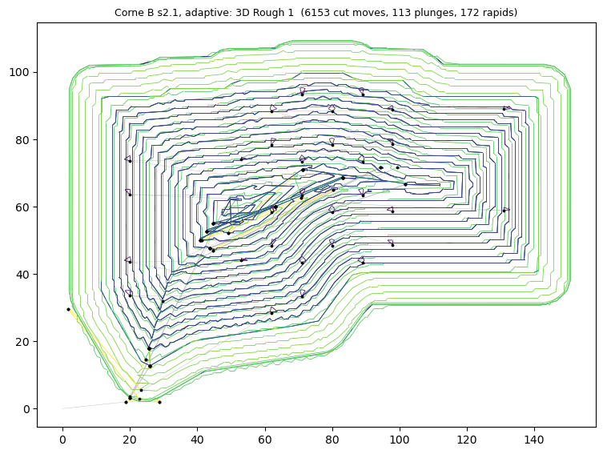
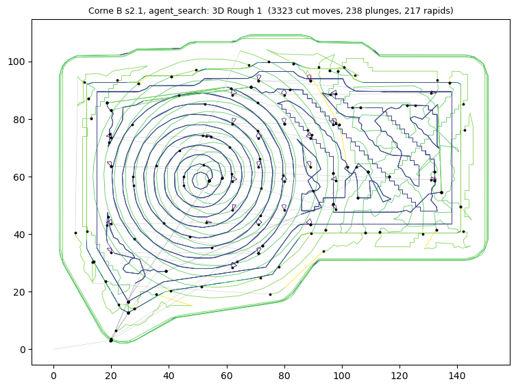
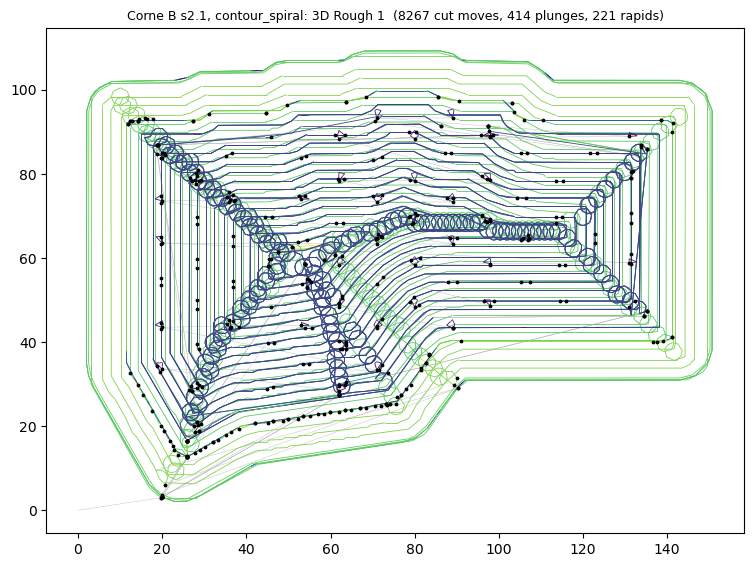
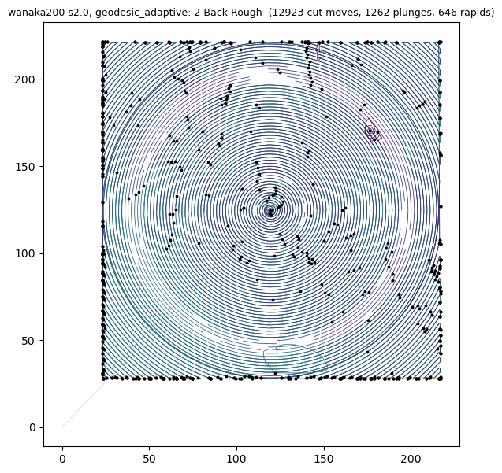
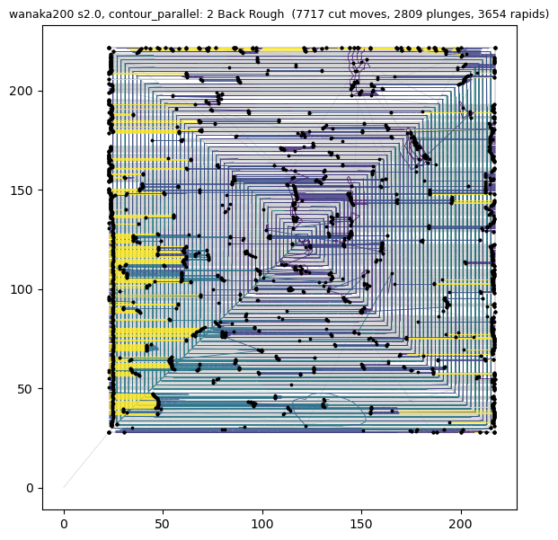
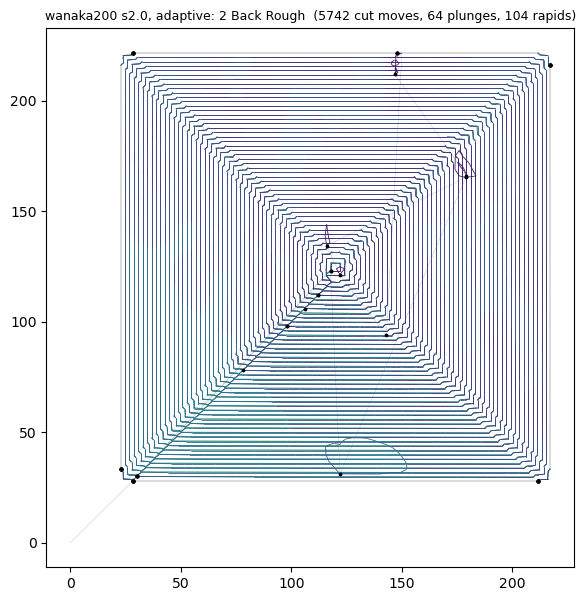
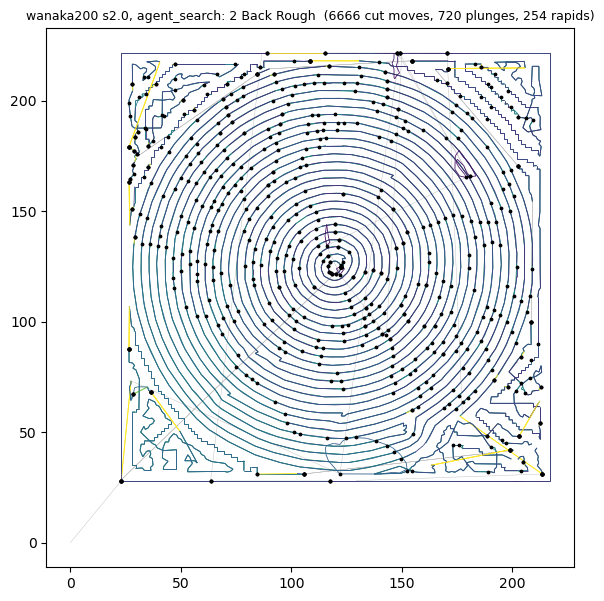
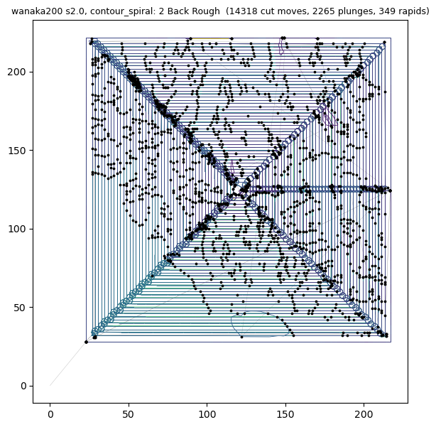

D64: op 1 per strategy (geodesic-integration 7ee3d3226), top view from program.nc; colour = Z, black dot = plunge, grey = rapid
Corne B s2.1: geodesic_adaptive

Corne B s2.1: contour_parallel

Corne B s2.1: adaptive

Corne B s2.1: agent_search

Corne B s2.1: contour_spiral

wanaka200 s2.0: geodesic_adaptive

wanaka200 s2.0: contour_parallel

wanaka200 s2.0: adaptive

wanaka200 s2.0: agent_search

wanaka200 s2.0: contour_spiral
